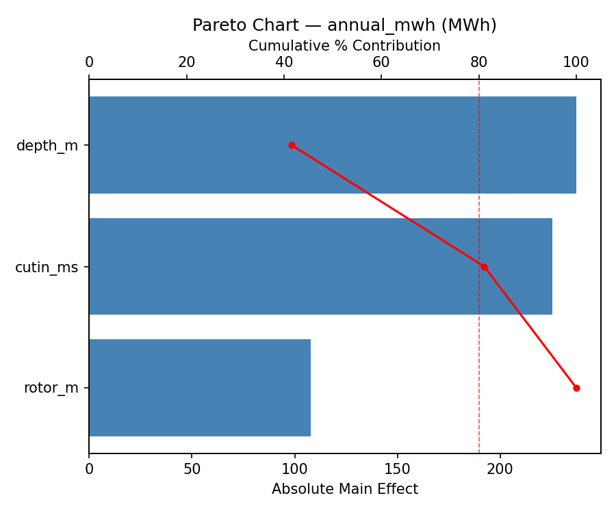
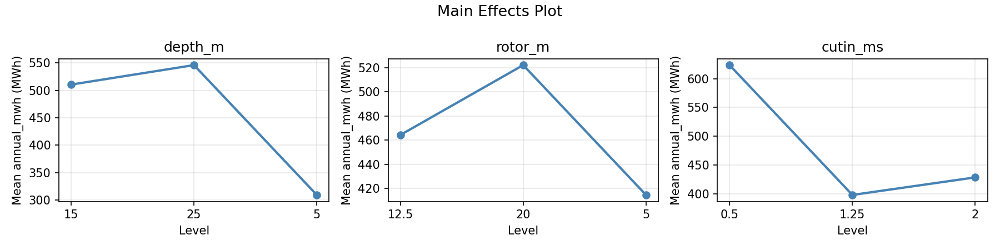
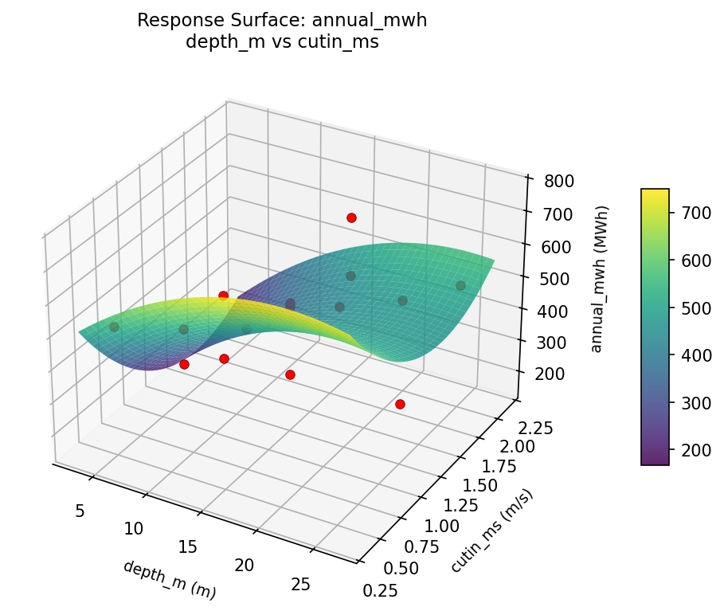
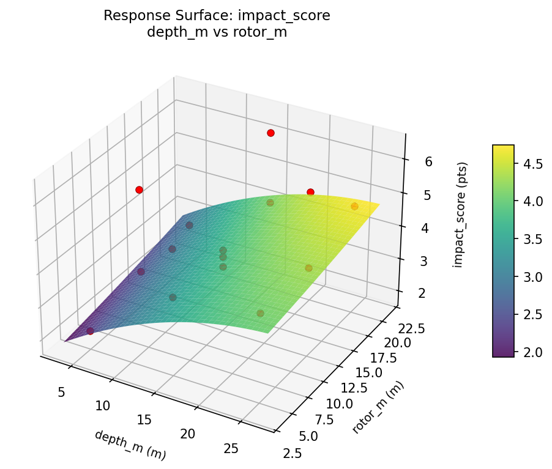
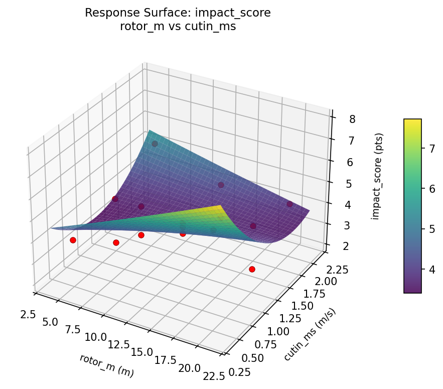

Summary
This experiment investigates tidal turbine placement. Box-Behnken design to maximize power output and minimize marine life impact by tuning turbine depth, rotor diameter, and cut-in speed.
The design varies 3 factors: depth m (m), ranging from 5 to 25, rotor m (m), ranging from 5 to 20, and cutin ms (m/s), ranging from 0.5 to 2.0. The goal is to optimize 2 responses: annual mwh (MWh) (maximize) and impact score (pts) (minimize). Fixed conditions held constant across all runs include site = tidal_channel, tidal range = 4m.
A Box-Behnken design was chosen because it efficiently fits quadratic models with 3 continuous factors while avoiding extreme corner combinations — requiring only 15 runs instead of the 8 needed for a full factorial at two levels.
Quadratic response surface models were fitted to capture potential curvature and factor interactions. The RSM contour plots below visualize how pairs of factors jointly affect each response.
Key Findings
For annual mwh, the most influential factors were depth m (41.6%), cutin ms (39.5%), rotor m (18.9%). The best observed value was 765.0 (at depth m = 5, rotor m = 12.5, cutin ms = 2).
For impact score, the most influential factors were cutin ms (43.2%), depth m (41.4%), rotor m (15.4%). The best observed value was 2.1 (at depth m = 25, rotor m = 5, cutin ms = 1.25).
Recommended Next Steps
- Run confirmation experiments at the predicted optimal settings to validate the model.
- Consider whether any fixed factors should be varied in a future study.
Experimental Setup
Factors
| Factor | Low | High | Unit |
|---|
depth_m | 5 | 25 | m |
rotor_m | 5 | 20 | m |
cutin_ms | 0.5 | 2.0 | m/s |
Fixed: site = tidal_channel, tidal_range = 4m
Responses
| Response | Direction | Unit |
|---|
annual_mwh | ↑ maximize | MWh |
impact_score | ↓ minimize | pts |
Configuration
{
"metadata": {
"name": "Tidal Turbine Placement",
"description": "Box-Behnken design to maximize power output and minimize marine life impact by tuning turbine depth, rotor diameter, and cut-in speed"
},
"factors": [
{
"name": "depth_m",
"levels": [
"5",
"25"
],
"type": "continuous",
"unit": "m"
},
{
"name": "rotor_m",
"levels": [
"5",
"20"
],
"type": "continuous",
"unit": "m"
},
{
"name": "cutin_ms",
"levels": [
"0.5",
"2.0"
],
"type": "continuous",
"unit": "m/s"
}
],
"fixed_factors": {
"site": "tidal_channel",
"tidal_range": "4m"
},
"responses": [
{
"name": "annual_mwh",
"optimize": "maximize",
"unit": "MWh"
},
{
"name": "impact_score",
"optimize": "minimize",
"unit": "pts"
}
],
"settings": {
"operation": "box_behnken",
"test_script": "use_cases/253_tidal_energy/sim.sh"
}
}
Experimental Matrix
The Box-Behnken Design produces 15 runs. Each row is one experiment with specific factor settings.
| Run | depth_m | rotor_m | cutin_ms |
|---|
| 1 | 15 | 5 | 0.5 |
| 2 | 15 | 12.5 | 1.25 |
| 3 | 25 | 12.5 | 2 |
| 4 | 25 | 12.5 | 0.5 |
| 5 | 15 | 12.5 | 1.25 |
| 6 | 15 | 12.5 | 1.25 |
| 7 | 5 | 12.5 | 2 |
| 8 | 25 | 5 | 1.25 |
| 9 | 15 | 5 | 2 |
| 10 | 25 | 20 | 1.25 |
| 11 | 5 | 12.5 | 0.5 |
| 12 | 15 | 20 | 2 |
| 13 | 5 | 5 | 1.25 |
| 14 | 5 | 20 | 1.25 |
| 15 | 15 | 20 | 0.5 |
Step-by-Step Workflow
1
Preview the design
$ python doe.py info --config use_cases/253_tidal_energy/config.json
2
Generate the runner script
$ python doe.py generate --config use_cases/253_tidal_energy/config.json \
--output use_cases/253_tidal_energy/results/run.sh --seed 42
3
Execute the experiments
$ bash use_cases/253_tidal_energy/results/run.sh
4
Analyze results
$ python doe.py analyze --config use_cases/253_tidal_energy/config.json
5
Get optimization recommendations
$ python doe.py optimize --config use_cases/253_tidal_energy/config.json
6
Generate the HTML report
$ python doe.py report --config use_cases/253_tidal_energy/config.json \
--output use_cases/253_tidal_energy/results/report.html
Real-World Experiment Workflow
ℹ
Physical Marine & Environmental Test? Use the Manual Workflow
Marine experiments involve real water conditions, living organisms, and environmental factors that require field testing. The simulation script above is for demonstration. For your real experiments, use record, status, and export-worksheet.
$ python doe.py export-worksheet --config use_cases/253_tidal_energy/config.json \
--format csv --output worksheet.csv
$ python doe.py status --config use_cases/253_tidal_energy/config.json
$ python doe.py record --config use_cases/253_tidal_energy/config.json --run 1
$ python doe.py analyze --config use_cases/253_tidal_energy/config.json --partial
$ python doe.py analyze --config use_cases/253_tidal_energy/config.json
$ python doe.py optimize --config use_cases/253_tidal_energy/config.json
$ python doe.py report --config use_cases/253_tidal_energy/config.json \
--output report.html
✔
Works Without a Test Script
The analysis pipeline doesn't care how results were produced. Record your measurements with record, and the full analysis, optimization, and reporting pipeline works identically. Use --partial to get early insights before all runs are complete.
Features Exercised
| Feature | Value |
|---|
| Design type | box_behnken |
| Factor types | continuous (all 3) |
| Arg style | double-dash |
| Responses | 2 (annual_mwh ↑, impact_score ↓) |
| Total runs | 15 |
Analysis Results
Generated from actual experiment runs using the DOE Helper Tool.
Response: annual_mwh
Top factors: depth_m (41.6%), cutin_ms (39.5%), rotor_m (18.9%).
Pareto Chart

Main Effects Plot

Response: impact_score
Top factors: cutin_ms (43.2%), depth_m (41.4%), rotor_m (15.4%).
Pareto Chart

Main Effects Plot

Response Surface Plots
3D surfaces fitted with quadratic RSM. Red dots are observed data points.
annual mwh depth m vs cutin ms

annual mwh depth m vs rotor m

annual mwh rotor m vs cutin ms

impact score depth m vs cutin ms

impact score depth m vs rotor m

impact score rotor m vs cutin ms

Full Analysis Output
RSM surface: rsm_annual_mwh_depth_m_vs_rotor_m.png
RSM surface: rsm_annual_mwh_depth_m_vs_cutin_ms.png
RSM surface: rsm_annual_mwh_rotor_m_vs_cutin_ms.png
RSM surface: rsm_impact_score_depth_m_vs_rotor_m.png
RSM surface: rsm_impact_score_depth_m_vs_cutin_ms.png
RSM surface: rsm_impact_score_rotor_m_vs_cutin_ms.png
=== Main Effects: annual_mwh ===
Factor Effect Std Error % Contribution
--------------------------------------------------------------
depth_m 237.0000 44.8759 41.6%
cutin_ms 225.2143 44.8759 39.5%
rotor_m 107.7500 44.8759 18.9%
=== Summary Statistics: annual_mwh ===
depth_m:
Level N Mean Std Min Max
------------------------------------------------------------
15 7 510.7143 129.5424 293.0000 701.0000
25 4 546.2500 195.2799 303.0000 765.0000
5 4 309.2500 152.5153 166.0000 512.0000
rotor_m:
Level N Mean Std Min Max
------------------------------------------------------------
12.5 7 464.2857 189.7452 166.0000 765.0000
20 4 522.2500 166.9299 336.0000 701.0000
5 4 414.5000 182.5824 223.0000 616.0000
cutin_ms:
Level N Mean Std Min Max
------------------------------------------------------------
0.5 4 623.5000 129.1214 512.0000 765.0000
1.25 7 398.2857 145.4644 223.0000 618.0000
2 4 428.7500 190.6679 166.0000 616.0000
=== Main Effects: impact_score ===
Factor Effect Std Error % Contribution
--------------------------------------------------------------
cutin_ms 1.8250 0.3188 43.2%
depth_m 1.7500 0.3188 41.4%
rotor_m 0.6500 0.3188 15.4%
=== Summary Statistics: impact_score ===
depth_m:
Level N Mean Std Min Max
------------------------------------------------------------
15 7 4.4286 1.0029 3.5000 6.3000
25 4 4.9000 1.0392 4.2000 6.4000
5 4 3.1500 1.3329 2.1000 5.1000
rotor_m:
Level N Mean Std Min Max
------------------------------------------------------------
12.5 7 4.2286 1.2175 2.6000 6.4000
20 4 4.5250 1.4500 2.8000 6.3000
5 4 3.8750 1.3276 2.1000 5.3000
cutin_ms:
Level N Mean Std Min Max
------------------------------------------------------------
0.5 4 5.4250 1.1758 3.9000 6.4000
1.25 7 3.6000 0.9037 2.1000 4.8000
2 4 4.0750 1.1117 2.6000 5.3000
Pareto chart (annual_mwh): use_cases/253_tidal_energy/results/analysis/pareto_annual_mwh.png
Pareto chart (impact_score): use_cases/253_tidal_energy/results/analysis/pareto_impact_score.png
Main effects (annual_mwh): use_cases/253_tidal_energy/results/analysis/main_effects_annual_mwh.png
Main effects (impact_score): use_cases/253_tidal_energy/results/analysis/main_effects_impact_score.png
Optimization Recommendations
=== Optimization: annual_mwh ===
Direction: maximize
Best observed run: #10
depth_m = 5
rotor_m = 12.5
cutin_ms = 2
Value: 765.0
RSM Model (linear, R² = 0.2220, Adj R² = 0.0098):
Coefficients:
intercept +466.4667
depth_m -48.6250
rotor_m +94.7500
cutin_ms +19.8750
RSM Model (quadratic, R² = 0.6397, Adj R² = -0.0089):
Coefficients:
intercept +498.6667
depth_m -48.6250
rotor_m +94.7500
cutin_ms +19.8750
depth_m*rotor_m -17.5000
depth_m*cutin_ms -16.2500
rotor_m*cutin_ms -122.5000
depth_m^2 -3.7083
rotor_m^2 -144.9583
cutin_ms^2 +88.2917
Curvature analysis:
rotor_m coef=-144.9583 concave (has a maximum)
cutin_ms coef=+88.2917 convex (has a minimum)
depth_m coef=-3.7083 concave (has a maximum)
Notable interactions:
rotor_m*cutin_ms coef=-122.5000 (antagonistic)
depth_m*rotor_m coef=-17.5000 (antagonistic)
depth_m*cutin_ms coef=-16.2500 (antagonistic)
Predicted optimum (from linear model):
depth_m = 5
rotor_m = 20
cutin_ms = 1.25
Predicted value: 609.8417
Model quality: Weak fit — consider adding center points or using a different design.
Factor importance:
1. rotor_m (effect: 245.8, contribution: 53.2%)
2. cutin_ms (effect: 118.8, contribution: 25.7%)
3. depth_m (effect: 97.2, contribution: 21.1%)
=== Optimization: impact_score ===
Direction: minimize
Best observed run: #9
depth_m = 25
rotor_m = 5
cutin_ms = 1.25
Value: 2.1
RSM Model (linear, R² = 0.2630, Adj R² = 0.0620):
Coefficients:
intercept +4.2133
depth_m -0.5625
rotor_m +0.5875
cutin_ms -0.2000
RSM Model (quadratic, R² = 0.5521, Adj R² = -0.2542):
Coefficients:
intercept +4.6000
depth_m -0.5625
rotor_m +0.5875
cutin_ms -0.2000
depth_m*rotor_m -0.1000
depth_m*cutin_ms -0.4750
rotor_m*cutin_ms -0.5250
depth_m^2 -0.1500
rotor_m^2 -0.9500
cutin_ms^2 +0.3750
Curvature analysis:
rotor_m coef=-0.9500 concave (has a maximum)
cutin_ms coef=+0.3750 convex (has a minimum)
depth_m coef=-0.1500 concave (has a maximum)
Notable interactions:
rotor_m*cutin_ms coef=-0.5250 (antagonistic)
depth_m*cutin_ms coef=-0.4750 (antagonistic)
Predicted optimum (from linear model):
depth_m = 5
rotor_m = 20
cutin_ms = 1.25
Predicted value: 5.3633
Model quality: Weak fit — consider adding center points or using a different design.
Factor importance:
1. rotor_m (effect: 1.6, contribution: 46.6%)
2. depth_m (effect: 1.1, contribution: 33.8%)
3. cutin_ms (effect: 0.7, contribution: 19.6%)